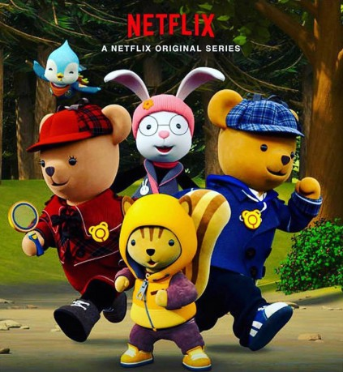

Alternativ: Treehouse Detectives (Originaltitel)
 
 IMDB-Wertung: 7.7 / 10
IMDB-Wertung: 7.7 / 10  Metascore: 0
Metascore: 0 
Für die neugierigen Bärengeschwister Toby und Teri ist Abenteuer kein Fremdwort. Toby hat ein großes Herz. Mit seiner eher kopfgesteuerten Schwester Teri bildet er spontan ein Detektivduo, das Geheimnisse in der Nachbarschaft lösen soll. Mit Teamarbeit und Entschlossenheit lassen die beiden Bären und ihre Freunde in dieser Zeichentrickserie für Vorschulkinder kein Rätsel ungelöst
Jahr: 2018
Dauer: 24 Minuten
FSK:
Land: Süd-Korea Studio: NetflixTonspuren: - , - , - , - ,
Untertitel: Deutsch, Englisch,
Auflösung: 720p (1280x720) Größe: 711 MB
Genre: Animation/Trick, TV-Serie
Regisseur:
Drehbuch:
Soundtrack:
Darsteller:
- Brody Allen als Toby, 5 episodes, 2018
- Jenna Davis als Teri, 5 episodes, 2018
- Dorah Fine als Deer, 4 episodes, 2018
- Ryan Bartley als , unknown episodes
 Philece Sampler als , unknown episodes
Philece Sampler als , unknown episodes- Abby Trott als , unknown episodes
- Shailene Woodley » #96 on STARmeter CELEBS Born Today Celebrity News Most Popular Celebs PHOTOS Latest Stills Latest Posters Photos We Love EVENTS Awards Central Festival Central Oscars Golden Globes Sundance Cannes Comic-Con Emmy Awards Venice Film Festival Toronto Film Festival Tribeca SXSW All Events News & Community LATEST HEADLINES ‘The Tonight Show’ Cancels Norm MacDonald Appearance After Comedian’s #MeToo Comment 7 hours ago | Variety - TV News Summer 2018 Delivers $4.38 Billion in Domestic Grosses, Keeping Year on Record Pace 14 hours ago | Box Office Mojo Universal Launches ��First Man’ Into Oscar Space And Also Fuels New Surprise Contender ‘Green Book’ To Upend The Race – Toronto Film Festival 15 hours ago | Deadline NEWS Top News Movie News TV News Celebrity News Indie News COMMUNITY Contributor Zone Polls Watchlist YOUR WATCHLIST if (!('imdb' in window)) window.imdb = ; window.imdb.watchlistTeaserData = href : /list/watchlist, src : https://m.media-amazon.com/images/G/01/imdb/images/navbar/watchlist_slot1_logged_out-1670046337._CB470041656_.jpg , href : /search/title?count=100&title_type=feature,tv_series, src : https://m.media-amazon.com/images/G/01/imdb/images/navbar/watchlist_slot2_popular-4090757197._CB470041610_.jpg , href : /chart/top, src : https://m.media-amazon.com/images/G/01/imdb/images/navbar/watchlist_slot3_top250-575799966._CB470041651_.jpg ; The essential resource for entertainment professionalsFind industry contacts & talent representationAccess in-development titles not available on IMDbGet the latest news from leading industry tradesClaim your page and control your brand across IMDb & AmazonTryIMDbProFreeTry IMDbPro Free | Help Sign in with Facebook Other Sign in options if (typeof uet == 'function') uet(ne); Edit Treehouse Detectives (2018– ) if ('csm' in window) csm.measure('csm_body_delivery_started'); Full Cast & Crew Series Writing Credits Jennifer Skelly als
- Leigh Kelly als , unknown episodes
Datei: X:\Kinder Serien\Baumhausdetektive S01\Baumhausdetektive S01E01.mkv seit 12.09.2018
Festplatte: Kinder-Filme+Trick
 Es gibt insgesamt 56 Filme in der Gruppe 'Kinder Serien'
Es gibt insgesamt 56 Filme in der Gruppe 'Kinder Serien'
")